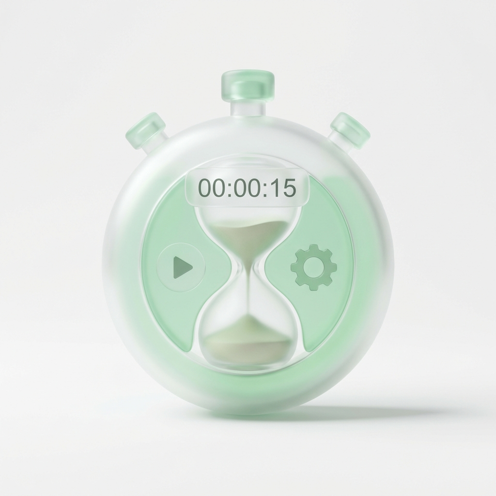

または下のボタンから
こんな方におすすめ
クリエイティブな制作時間を、もっと大切にしたいあなたへ。
生成AIユーザー
ChatGPTやNano Banana Proなどで生成された「4分割グリッド画像」を、一発でスタンプに変換できます。

時短したい方
40画像の書き出し、リネーム、サイズ調整...面倒な単純作業はすべてグリスタにお任せ。
PC作業が苦手な方
Photoshopなどの高価なソフトは不要。ブラウザだけで完結するのでスマホでもOK。